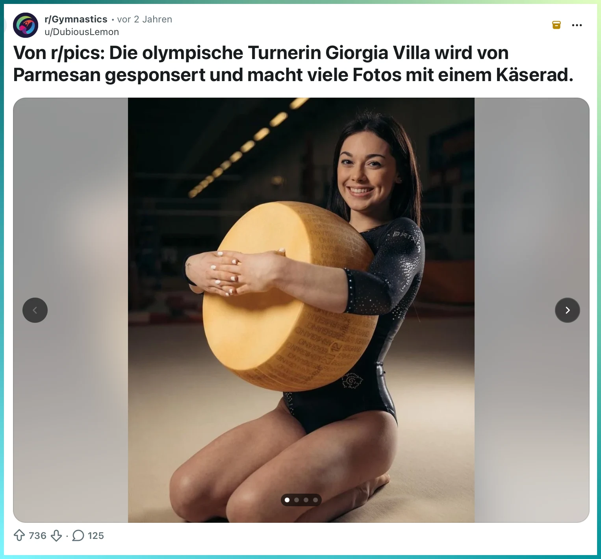

Mit KI den Belegen auf der Spur · Stunde 2
Eine Turnerin und ein Käserad?
C · Ihr prüft selbstständig zu zweit

Bild herunterladen · Antippen zum Vergrößern.
Unsere Prüfbehauptung
„Die olympische Turnerin Giorgia Villa wird von Parmesan gesponsert und macht viele Fotos mit einem Käserad.“
Kann ein Bild allein eine Sponsorbeziehung beweisen? Achtet auch darauf, für welchen Zeitpunkt eure Quelle etwas belegt.
Euer Auftrag
- Schreibt zuerst euren Plan bei C auf der Rückseite auf: Was würde die Sponsorbeziehung belegen? Lasst die KI gefundene Belege nach Art und Aussage ordnen. Wählt einen wichtigen Beleg zur eigenen Prüfung.
- Findet möglichst eine datierte Mitteilung der Sportlerin oder der beteiligten Organisation. Prüft, was diese Quelle tatsächlich bestätigt. Werbung ist für das eigene Sponsoring relevant, aber kein unabhängiger Beleg für Produktversprechen.
- Notiert Quelle, Datum und genaue Stelle. Formuliert ein Urteil mit Zeitangabe und einer Grenze. Was ist mit diesem Fund noch nicht bewiesen?
Notiert auf dem Arbeitsblatt, nicht auf der Webseite.
Starthilfe: eine Frage an die KI
Beschreibt zuerst selbst die Behauptung. Nur bei Bedarf: diesen Vorschlag anpassen.
Was würde eine Sponsorbeziehung zwischen Giorgia Villa und einer Parmesan-Organisation belegen? Finde und ordne Belege nach Art und Aussage. Welche sind entscheidend? Suche dafür passende Quellen mit Datum, Links und genauen Stellen. Was belegen sie für damals, was bleibt über heute offen?
Festgefahren? Eine Denkstütze
Sucht nach ihrem Namen und „Sponsor“ oder „sponsorship“. Ein alter Post beweist nicht automatisch, dass ein Vertrag heute noch läuft. Ein Beleg zur Sache muss nicht der allererste Ursprung des Reddit-Posts sein.
Quellenstart – erst nach eurer eigenen Frage
Suchstart: Giorgia Villa + Sponsoring
Findet selbst heraus, wer beteiligt ist. Ein Suchergebnis ist noch keine geöffnete Quelle.